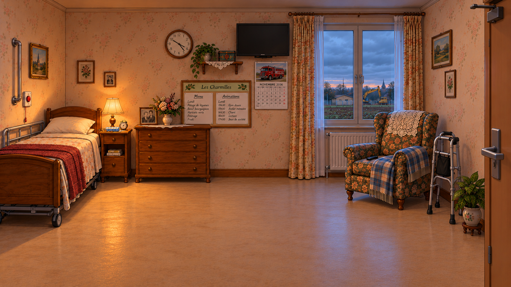
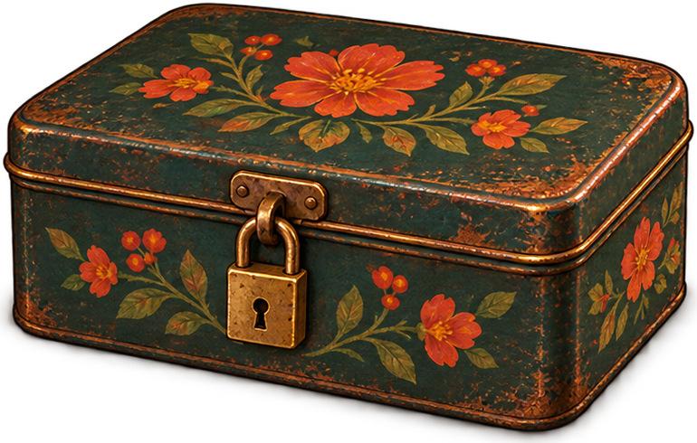

La chambre de Gisèle prend vie

Après l'arrivée à la résidence des Weppes, le joueur entre enfin dans la chambre de Gisèle. C'est le premier décor où l'on peut vraiment jouer.
La pièce est composée objet par objet : le lit, le fauteuil, la commode, la télévision, le tableau des animations. Au survol, chacun s'éclaire et affiche son nom ; au clic, il livre une observation.
Des objets qui changent
La télévision passe du noir au journal régional, puis au reportage sur la gare effondrée. Le bouton d'appel s'allume en rouge. Et l'horloge, montée avec ses aiguilles séparées, reste figée sur l'heure exacte où tout s'est arrêté.

Reste la boîte en fer peinte de fleurs, fermée par un petit cadenas. Elle aura son importance.